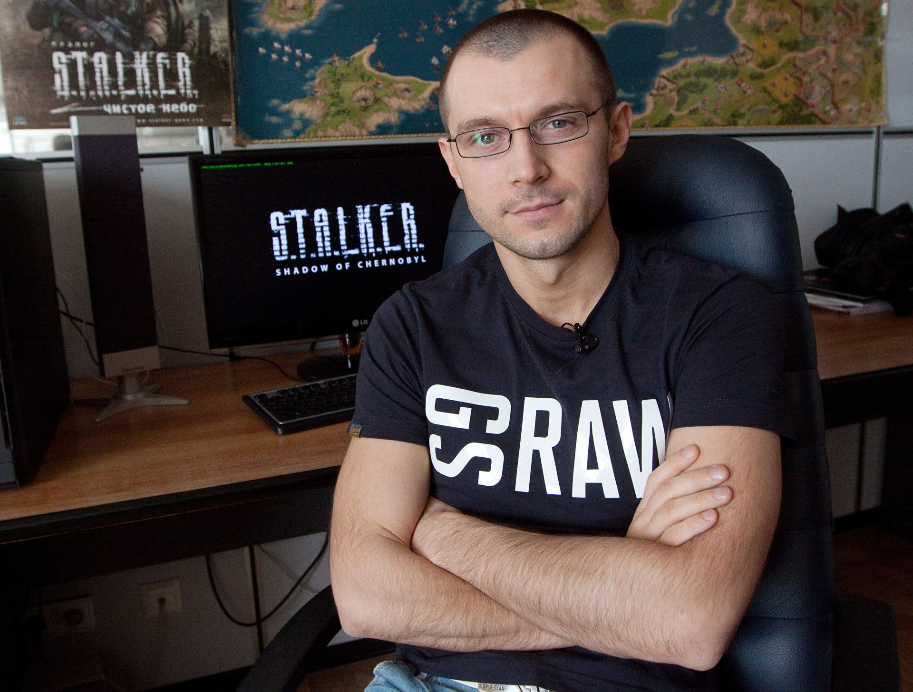
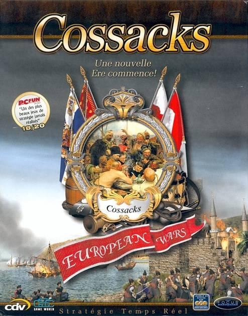

GSC Game World
Українська компанія-розробник комп'ютерних ігор, найбільше відома за ігровими серіями «Козаки» та S.T.A.L.K.E.R. Заснована у Києві в 1995 році Сергієм Григоровичем, назва компанії утворена від його ініціалів (Grigorovich Sergiy Constantinovich). Спочатку займалася перекладами іноземних ігор на російську мову. Згодом перейшла до самостійної розробки ігор, першим міжнародним успіхом була гра "Козаки". У березні 2007-го, після 6 років розробки, компанія випустила гру S.T.A.L.K.E.R.: Тінь Чорнобиля, яка здобула культовий статус і стала фінансовим успіхом, продавшись тиражем більше 2 млн.
Початок роботи студії
Заснована в 1995 році 16-річним Сергієм Григоровичем, який до того продавав дискети з іграми на ринку. Першою в Україні компанія почала перекладати ігри для ПК на російську мову, створювати мультимедійні енциклопедії. Ця діяльність носила кустарний і нелегальний характер, що згодом привело до складнощів роботи з міжнародними партнерами. Працювали на російський ринок. В 1997 році GSC розпочала роботу над першою грою - квестом, але через відсутність досвіду і складність задачі проект довелося закрити. Російський дефолт 1998 року примусив компанію відійти від ринку країн СНД, і компанія перейшла до самостійної розробки ігор в жанрі стратегії в реальному часі
Перехід до розробки ігор і перший хіт
Спроба дістати у Blizzard Entertainment контракт на розробку Warcraft 3 не здобула успіху через недовіру до студії Григоровича. За його словами, прототип GSC був технічно досконалішим, ніж розробка студії у США, але студія не пішла на контракт через недовіру до східноєвропейських розробників і молодості власника компанії. На початку 1999 року компанія викладає у вільний доступ WarCraft 2000. Проект вирізнявся значним підвищенням ліміту на кількість юнітів, що одночасно знаходяться на карті. Результати перших проектів лягли в основу повністю самостійно створеної гри, яка стала початком серії ігор «Козаки».
У 2001 році компанія випускає стратегію в реальному часі "Козаки", що стала першою міжнародно успішною українською грою і принесла визнання компанії. Перший фінансовий успіх дав можливість розширити штат компанії та встигнути до кінця року випустити доповнення Козаки: Останній довід королів та першу успішну гру в жанрі шутер Venom. Codename: Outbreak. В цій грі були реалізовані досить унікальні навіть для світового ринку цього жанру ідеї - як-то режим суперзахисту та необхідність звертати увагу в першу чергу не на картинку на екрані, а на події довколишнього віртуального "світу", головним чином звуки. В тому ж році програмісти компанії починають роботу над першими версіями рушія X-Ray, який ліг в основу ігор S.T.A.L.K.E.R.
Розробка S.T.A.L.K.E.R.
В 2001 році почалась розробка гри «Oblivion Lost» ("Втрачене забуття"). Сергій Григорович розповідає про це так:
У березні 2002 року члени команди «Oblivion Lost» поїхали на екскурсію до Чорнобильської зони відчуження, щоб назбирати матеріали і натхнення. Після цього концепція гри повністю змінилася, чорнобильська катастрофа стала темою гри. Проект став називатися "Stalker. Oblivion Lost". У зв'язку з тим, що компанія не отримала дозволу на бренд "Stalker", назва змінилась на "S.T.A.L.K.E.R. Oblivion Lost". Гру спочатку планувалось випустити в кінці 2003 року.
20 березня 2007 року світ побачила найвідоміша гра компанії «S.T.A.L.K.E.R.: Тінь Чорнобиля». На четвертий день після виходу проект «S.T.A.L.K.E.R.» опинився на восьмій позиції в чарті продажів ігор для різних платформ та перше — серед ігор для РС в рейтингу ELSPA. За перший рік було продано більш ніж 1.5 мільйона копій, що зробило гру найуспішнішим проектом з випущених в країнах СНД. Шалений успіх гри підштовхнув до ширшого використання бренду «S.T.A.L.K.E.R.». Створюється однойменна серія книжок, аксесуарів та лінії одягу, проводяться переговори щодо створення телесеріалу. Протягом трьох наступних років виходить два доповнення до гри - «S.T.A.L.K.E.R.: Чисте небо» та «S.T.A.L.K.E.R.: Поклик Прип'яті». Одночасно компанія починає розробку оновлення гри S.T.A.L.K.E.R. 2 на новому рушії, розробленому з урахуванням останніх новинок в області комп'ютерних технологій.
9 грудня 2011 року власник компанії Сергій Григорович на зібранні трудового колективу оголосив про зупинення діяльності компанії, в GSC фактично лишився тільки один співробітник — сам Сергій Григорович. Більше трьох років компанія займалась виключно підтримкою серверів для мережевих ігор, продажем вже випущених дисків, книжок та сувенірів і розповсюдженням ліцензій.
Список ігор, випущених GSC Game World
| Назва гри | Дата | Платформа |
|---|---|---|
| WarCraft 2000: Nuclear Epidemic | 1998 | Microsoft Windows |
| Козаки: Європейські війни | 2001 | Microsoft Windows |
| Venom. Codename: Outbreak | 2001 | Microsoft Windows |
| Козаки: Останній довід королів | 2001 | Microsoft Windows |
| Hover Ace | 2002 | Microsoft Windows |
| Козаки: Знову війна | 2002 | Microsoft Windows |
| Завоювання Америки | 2002 | Microsoft Windows |
| Завоювання Америки: У пошуках Ельдорадо | 2003 | Microsoft Windows |
| FireStarter | 2003 | Microsoft Windows |
| Олександр | 2004 | Microsoft Windows |
| Козаки II: Наполеонівські Війни | 2005 | Microsoft Windows |
| Козаки II: Битва за Європу | 2006 | Microsoft Windows |
| Герої знищених імперій | 2006 | Microsoft Windows |
| S.T.A.L.K.E.R.: Тінь Чорнобиля | 2007 | Microsoft Windows |
| S.T.A.L.K.E.R. Mobile | 2007 | Java ME |
| S.T.A.L.K.E.R.: Чисте небо | 2008 | Microsoft Windows |
| S.T.A.L.K.E.R.: Поклик Прип'яті | 2009 | Microsoft Windows |
| Козаки III | 2016 | Microsoft Windows, Linux, Mac OS X |
| S.T.A.L.K.E.R. 2 | 2021 | Microsoft Windows |